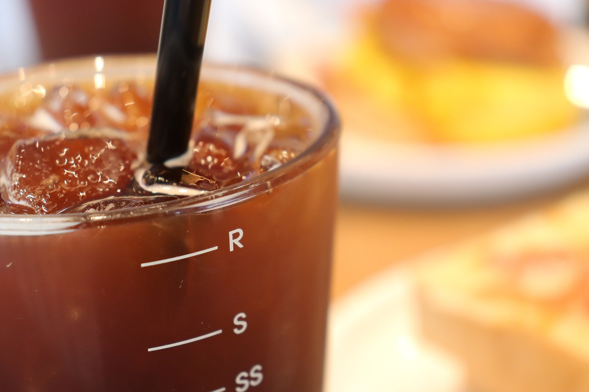

만드는 방법
아메리카노는 에스프레소 샷 1개나 2개를 뜨거운 물 150~480ml 와 섞어서 만든다. 에스프레소에 뜨거운 물을 부어, 에스프레소 추출 시 나오는 거품인 크레마가 거의 없어지는 게 특징이다
역사
1773년 보스턴 차 사건 이후 미국 사람들이 홍차를 대신해 커피를 홍차처럼 연하게 마시기 시작하였고 미국 사람들의 연하게 마시는 스타일이 지속되어 아메리칸 스타일의 커피라 불리었다.
제2차 세계대전 때 추축국에 가담했던 이탈리아가 1943년에 항복하였을 때 로마에 입성하였던 연합군 자격의 미군 병사들이 이탈리아식 커피인 에스프레소를 마셨을 때 쓴맛 때문에 여기에 물을 희석하면서 마셨다고 하여서 이탈리아어로 미국인을 뜻하는 아메리카노로 불렸다
